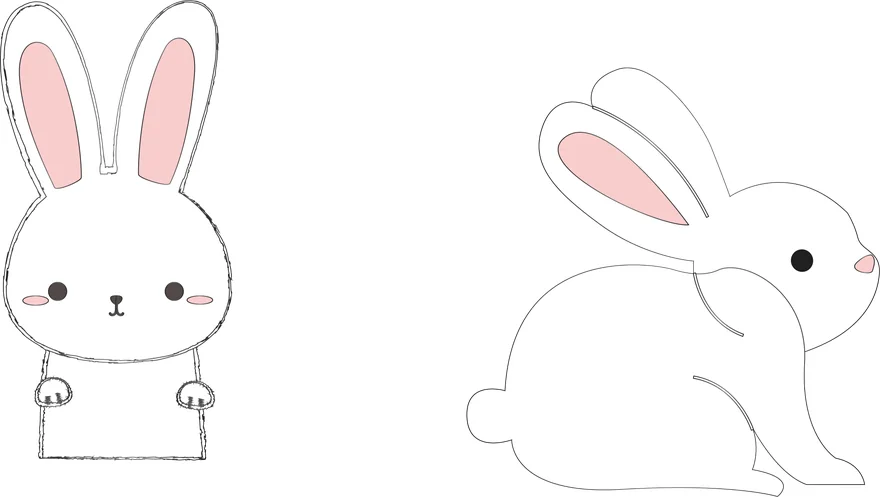
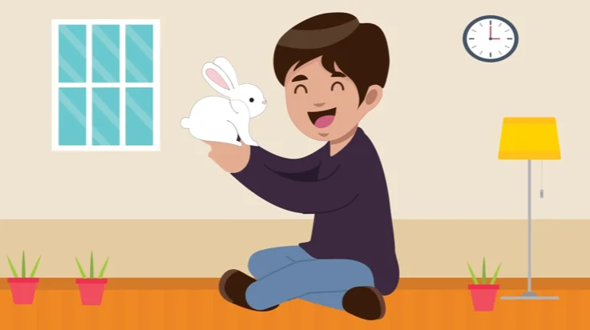

I illustrated and animated this short video to explain what it takes to care for a rabbit. The story follows a rabbit given as a gift and asks viewers to consider the commitment before bringing one home.
Character and scene design

Two poses used to develop the character’s appearance.

The owner and rabbit get to know each other.